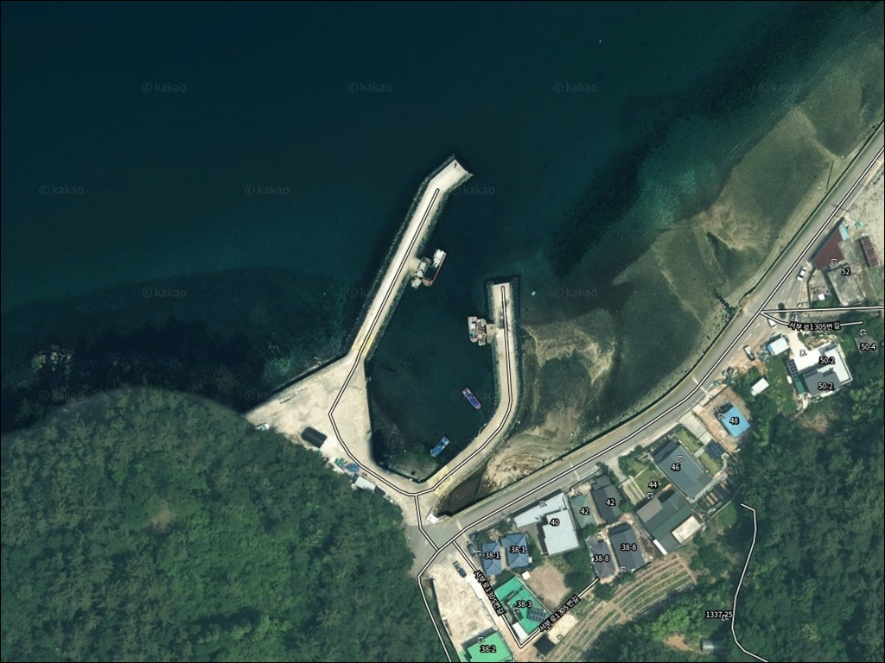
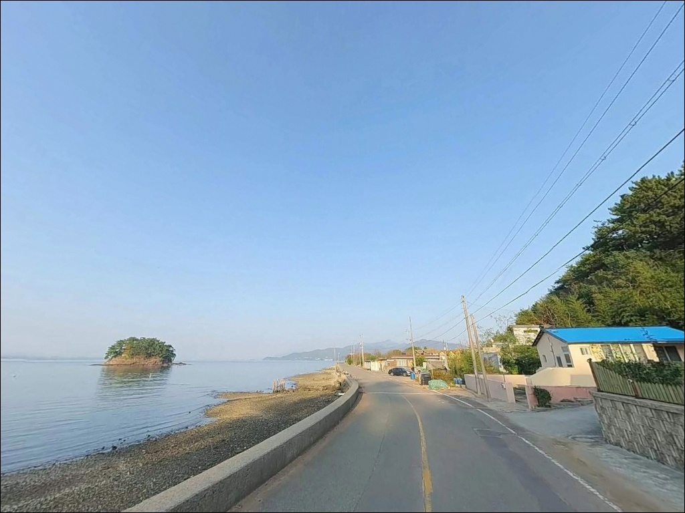
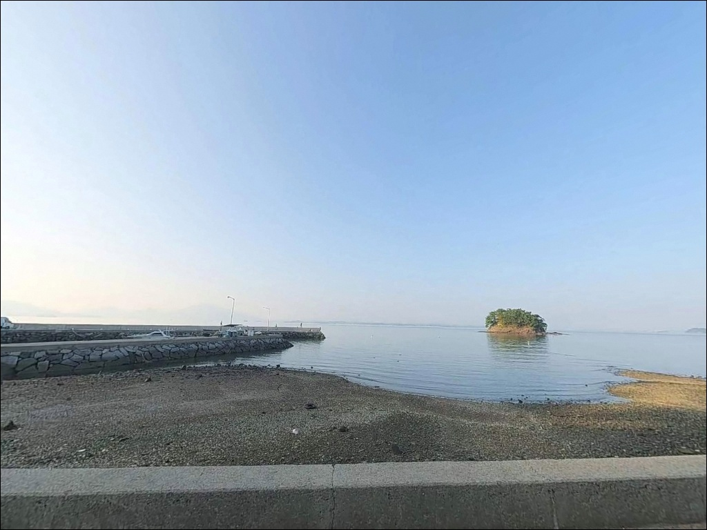
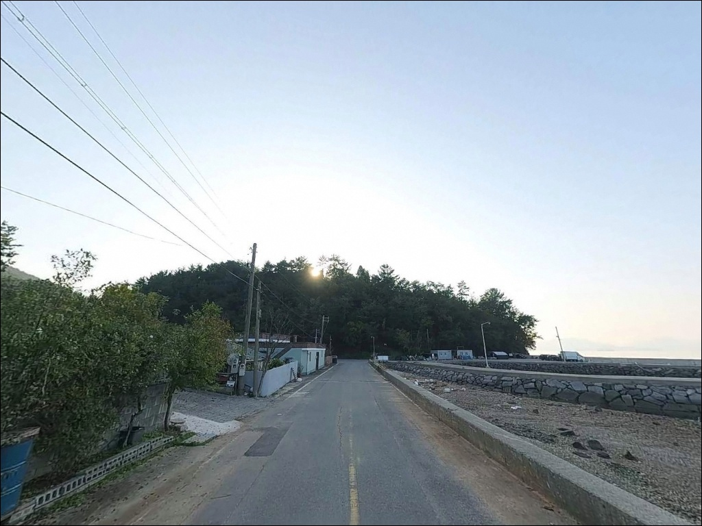
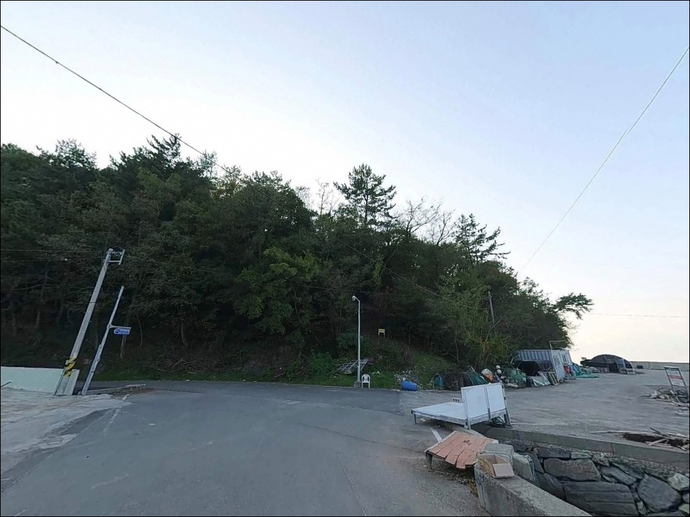
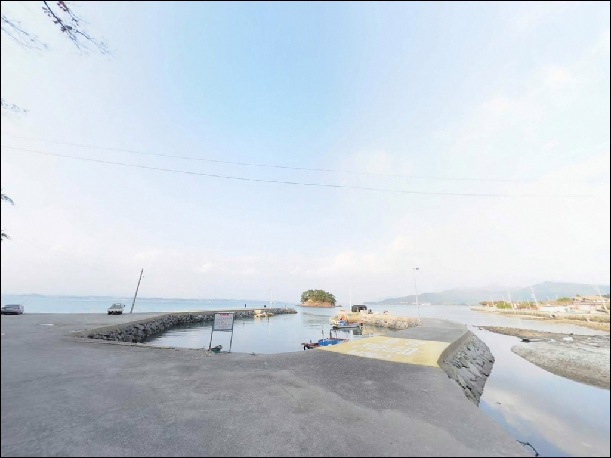
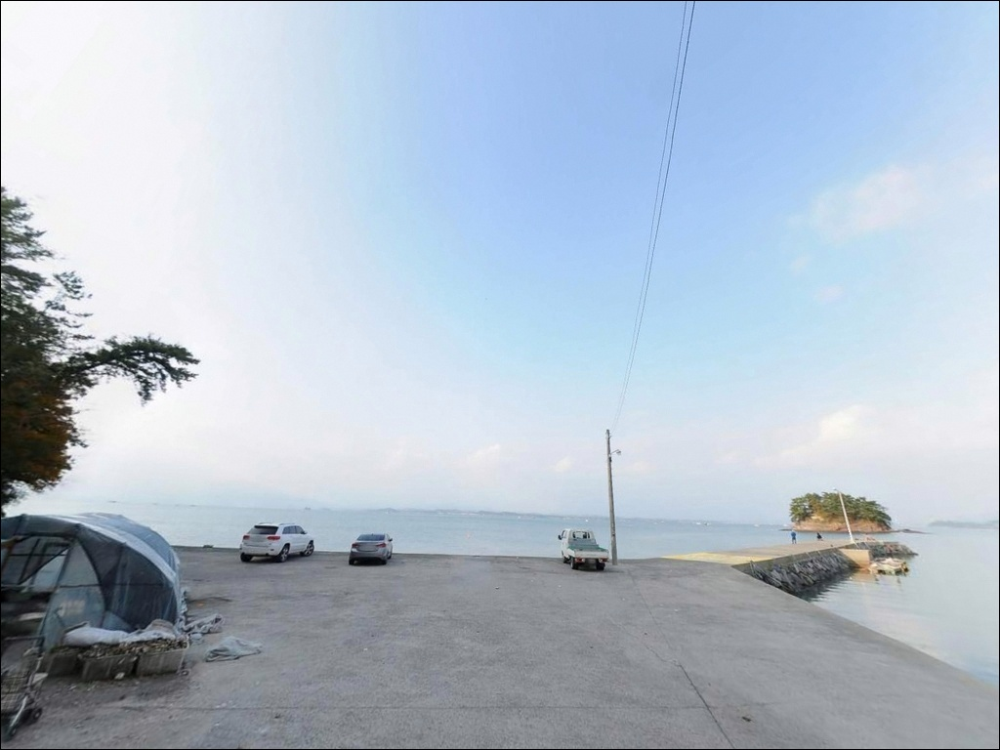
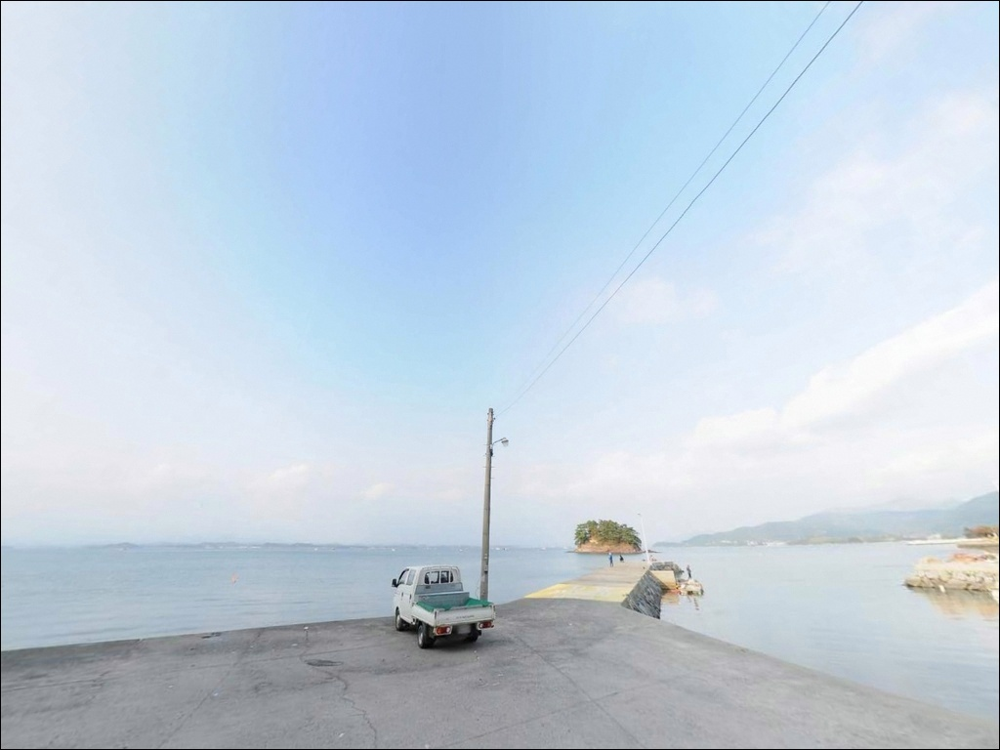
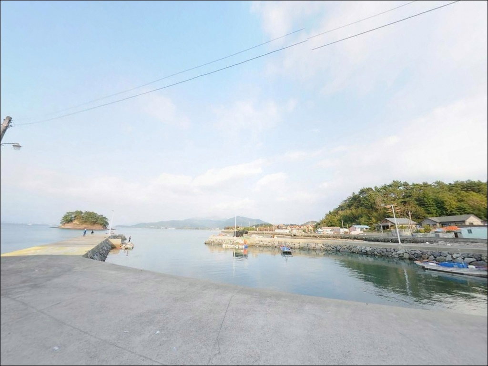

대벽리방파제 갑오징어 에깅, 들물 조류 살아날 때 채비 쓸리는 수로 지형


포인트 안내
대벽리방파제
경남 남해군 창선면 대벽리 825-9
창선도 내만이라는 말만 믿고
물때 확인 없이 진입하면
조류가 살아나는 구간에서
찌가 흘러버리거나 채비가 쓸려
포인트 절반을 제대로 쓰지 못하는 상황이
만들어집니다.
사천만과 창선도 사이 수로 구조는
내만이라도 들물·썰물 전환 시점에
조류가 강하게 살아납니다.
이 흐름을 알고 입장하느냐,
모르고 앉느냐에 따라
같은 방파제에서 결과가 달라집니다.
이 글은 대벽리방파제의
진입 동선, 차박 여건, 물때 판단 기준,
낚시 방식별 공략 조건을 중심으로 정리합니다.
조황 단정이나 특정 어종 보장은
이 글의 범위에 포함되지 않습니다.

1. 진입 동선과 포인트 접근성
창선교를 건너 창선도로 진입한 뒤
동부대로(지방도 1024호선 계열)를 따라
창선도 동부 해안을 남쪽으로 내려오면
대벽리 방향 마을 진입로가 나옵니다.
마을 안길 구간은 1~1.5차선 포장도로이며
승용차나 소형 SUV는 무리 없이 진입할 수 있습니다.
캠핑카나 대형 SUV는
마을 안길 일부 구간에서
회전 반경 제약이 발생할 수 있어
출발 전 위성지도로 경로를
미리 확인하는 편이 안전합니다.
주차는 방파제 입구 전방
어업인 회관 앞 콘크리트 공터를
1순위로 활용합니다.
승용차 기준 5~8대 수준의 공터이며,
방파제까지 거리가 가까워
장비를 차에 두고 낚시를 오갈 수 있는
베이스캠프형 주차 구조가 형성됩니다.
어선 입출항 동선을 막지 않는 자리가 우선입니다.

2. 차박 환경과 야간 체류 여건
대벽리방파제의 차박은
어업인 회관 앞 공터 활용 방식이
현실적인 선택입니다.
공터 규모 자체가 크지 않아
차박을 메인 목적으로 삼기보다는
낚시 후 1박 체류 방식으로 접근하는 편이
자리 확보 측면에서 유리합니다.
대벽마을 민가가 방파제 후방에
밀집해 있는 구조라
야간에도 간접 조명이 들어오는 편입니다.
방파제 입구와 중간 지점까지는
가로등이 설치되어 있어
완전 암흑 환경은 아니지만
방파제 끝단으로 갈수록 어두워져
헤드랜턴은 반드시 챙겨야 합니다.
민가와 가까운 생활권 포인트 특성상
야간 소음과 쓰레기 관리에
각별히 신경 써야 합니다.
이 포인트에서 낚시객들이 버리고 간 쓰레기로
주민 민원이 발생한 사례가 있어
발생한 쓰레기는 전량 수거해 반출하는 것이
포인트를 오래 사용할 수 있는 조건입니다.


3. 주변 편의시설 및 인프라 현황
대벽리방파제는 창선도 내 소형 방파제 중
편의시설 접근성이 좋은 편에 속합니다.
GS25 편의점이 방파제에서 도보 2~5분 거리에
위치하고 있어(대벽리 86-1번지)
출조 중 간단한 식음료나 소품을
보충하기 용이합니다.
전화는 055-867-7750입니다.
주유는 창선면 동부대로 방면의
S-OIL 창선대교LPG충전소를
차량으로 5분 내외 거리에서 이용할 수 있습니다.
창선면 서부권으로 이동하면
CU 편의점도 있어
기본 자급 체제는 갖추기 수월한 입지입니다.
응급 상황 발생 시에는
삼천포대교를 건너 사천 방향으로 이동하면
대형 마트와 종합병원 인프라를
이용할 수 있습니다.
창선도 내 의료시설은 제한적이므로
비상약품과 연료는
출발 전에 충분히 갖추는 것이 기본입니다.

4. 조류가 살아나기 전에 챙겨야 할 준비사항
대벽리방파제 방문에서
가장 먼저 확인할 것은 물때입니다.
창선도와 남해 본섬 사이 수로 구조는
들물·썰물 전환 전후로
조류가 강하게 살아나는 구간을 만들어냅니다.
바다타임에서 창선면 대벽리 기준 물때를 확인하고
초들물~중들물 타이밍을 중심으로
입장 시각을 맞추는 것이 기본 전략입니다.
방파제 외항 테트라포드 구간은
발판이 고르지 않아
야간에는 특히 조심해야 합니다.
외항 쪽에 앉을 계획이라면
구명조끼와 스파이크화는 필수이며,
갯바위 구역은 별도 광원이 없으므로
고성능 헤드랜턴을 지참해야 합니다.
방파제 인근에 어선 계류 구역과
어업인 회관 주변 작업 공간이 있습니다.
낚싯줄이 어선 동선과 교차하지 않도록
자리를 잡기 전에 확인하는 것이
기본 매너입니다.
암초 지형 특성상
여분 채비는 넉넉하게 준비하는 편이 좋습니다.

5. 지형 기반 낚시 여건 분석
대벽리방파제는
마을 선착장에서 길게 뻗은 메인 방파제와
그 옆으로 이어지는 자연 갯바위 지대로
구성된 복합 지형입니다.
방파제 외항은 테트라포드로 마감되어 있으며
내항은 콘크리트 직벽 구조입니다.
방파제 좌측 갯바위는 도보 진입이 가능해
방파제 인파를 피해 탐색하기 좋은
별도 자리가 형성됩니다.
방파제 끝단 기준 수심은
6~8m 내외이며
바닥은 모래와 여밭이 섞인 구조입니다.
끝단 외항 방향으로 나갈수록
수심이 급변하는 구간이 형성되며
이 구간이 에깅과 릴찌낚시 채비가 살아나는 자리입니다.
창선도와 남해도 사이 수로 영향을 받아
조류 흐름이 안정적으로 공급되는 구조입니다.
특히 들물 전후로 조류 방향이
외항 쪽에서 안정되는 편이라
이 타이밍을 노리는 것이
이 포인트를 제대로 활용하는 방법입니다.
출조 전에 창선면 방파제 낚시 조황을
반드시 검색해 보시기 바랍니다.

6. 포인트에 어울리는 낚시 스타일
이 포인트에서 가장 잘 맞는 낚시는
갑오징어 에깅입니다.
창선면 내만이 갑오징어권으로 형성된 해역이며
대벽리방파제 끝단과 외항 콧부리 구간이
에기 운용에 유리한 수심과 조류 조건을 갖추고 있습니다.
가을철에는 에깅 낚시객들이 주말마다 집중되는
수준으로 알려진 포인트입니다.
방파제 옆 갯바위 구역에서는
감성돔 릴찌낚시도 노려볼 만합니다.
조류가 살아나는 물때에 맞춰
찌를 흘리는 방식으로 운용하며
봄·가을 씨알이 올라오는 구간에
갯바위 경계선을 탐색하는 것이 효율적입니다.
야간에는 볼락 라이트게임도 어울립니다.
방파제 가로등 아래에서
소형 지그헤드 채비로
내항 석축과 끝단 주변을 천천히 탐색하는 방식이
이 포인트 구조와 잘 맞습니다.
원투낚시는 방파제 끝단에서
외항 방향으로 채비를 멀리 보내
바닥 탐색형으로 운용하는 것이 기본입니다.

7. 대안 포인트와 플랜 B 동선
대벽리방파제 조류가 너무 강하거나
공터 주차 여건이 여의치 않을 때는
낭천방파제가 첫 번째 대안입니다.
대벽리방파제 남쪽 약 1.2km 거리로
창선도 동부 해안선에 위치하며
같은 사천만 해역권 낚시 조건을 공유합니다.
차박 공간도 대벽리보다 넓은 편이어서
체류 위주 방문자에게 유리한 대안입니다.
후박방파제와 단항방파제는
창선면 내만에서 에깅과 갯바위낚시로
알려진 포인트입니다.
반경 3km 안에 밀집해 있어
대벽리에서 이동해 묶어 돌아보기 좋은 동선이
형성됩니다.
차박 대안으로는
창선대교타운 공용주차장이 안정적입니다.
넓은 주차 부지와 편의시설이 갖춰진 구조로
대벽리방파제가 여의치 않을 때
베이스캠프를 이곳에 두고
주변 포인트를 이동하며 탐색하는 방식이
효율적입니다.

물때를 알고 앉으면
대벽리방파제가 달라집니다
에깅이나 릴찌낚시를 즐기는 낚시인이라면
대벽리방파제의 지형 조건은
잘 맞는 구조입니다.
방파제 끝단 수심 변화 구간과
옆으로 이어지는 갯바위 지대까지
복합 탐색이 가능하고,
GS25 편의점이 도보 거리에 있어
창선도 내 소형 방파제 중 자급 부담이 낮은 편입니다.
반면 물때 계산 없이
조류가 강한 시간대에 진입하면
찌가 흘러버리거나 에기 컨트롤이
어려운 상황을 맞닥뜨릴 수 있습니다.
물때 확인, 여분 채비 준비, 민가 소음 관리,
이 세 가지를 갖추고 간다면
창선도 동부 해안에서
기억에 남는 출조가 될 수 있는 곳입니다.
방파제 공터에 차를 세우고 하룻밤 머물며
조류 타이밍에 맞춰 던지는 낚시를
즐기는 차박 낚시꾼이라면,
민가 배려 원칙만 지켜두면
낚시와 차박을 함께 풀기 좋은
조용한 창선도 동부 포인트입니다.